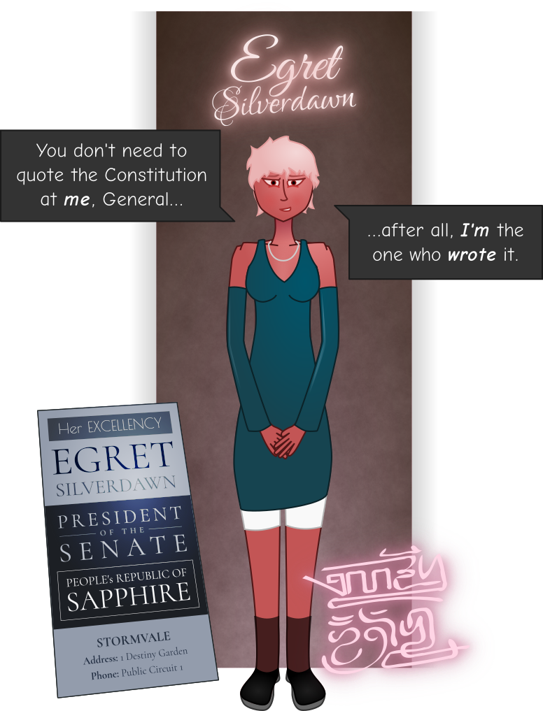

I drape my coat awkwardly across the over-full coatrack, absentmindedly kicking the snow off my boots and blinking as my eyes adjust from the blinding white of the sun outside. My feet are cold enough I don’t bother to take off my socks, the soft, thick pair that Daisy knitted for me in the Autumnsborough trenches, just days before the battle that took her life. Two years later they’re the only socks I have that seem able to hold their own against the cruel chill of a northern winter.
I pad softly down the dark hall, idly rubbing my hands together and breathing deeply of the warm air. As I turn down the leftward corridor into the east wing, I find the door to the guest room ajar, but I knock all the same before I enter. Light from the great picture window spills out into the hallway as I push the door open, that unique sparkling white of a glowing sun reflecting off fresh-fallen snow. Maybe someday I’ll be able to see that kind of sunlight again without my heart pounding like a cannon in my chest.
From where I stand I can just see the edge of Cormorant Court through the window, encircled by the high wall of terraced apartments. The great fountain in the center of the memorial walls is frozen solid. A little white cap of snow sits on the head of the statue perched atop it, its wings spread across the heavens and beak towards the sun. Sometimes I think Egret built the memorial here just because she didn’t want to see that bird every time she looked out her office window, and truth be told I couldn’t blame her. But for all the pain and sorrow that wells up in my heart whenever I look at the thing, there’s still something comforting about having it so near. About touching my hand to the cold marble of the walls, tracing my fingers across the lettering of names that were once as familiar to me as Bear’s or… or Cormorant’s. I’ve spent more than a few sleepless nights sitting out there, back pressed up against the Ninth’s own memorial stone, a cigarette at my lips, staring up into the twirl of snowflakes cascading down from the sky.
Fantasizing about what I’d say to them all if I could steal away just one more moment with each.
Moose is splayed out across the sofa, a pillow over his head, chest moving gently with the rhythm of sleep. Slowly, I approach the bed next to him. The sheets are even more of a tangled mess than when I left, half the pillows in the house heaped about the frail body of the girl lying there. Her breathing is calmer than it was last night, and the blankets are no longer soaked with sweat. Her head is buried in a pillow.
Sometimes it’s hard to believe I’m looking at the same woman I used to know. The fearless, Matikhe-may-care badass who wouldn’t hesitate for a moment before taking a flying leap into no man’s land and dragging some poor fuck to safety. Who’d grin up at me and crack jokes while I cleaned and dressed her bullet wounds, waving away all offers of opium. Who seemed absolutely goddamn invincible.
Until that fucking night.
“Hey,” I murmur. She cracks an eyelid.
“…m-ma’am?” she whispers.
I sigh, reaching out and touching her hand softly. She flinches, but doesn’t pull away. “How are you doing, Spar?”
She closes her eyes again. “Don’t feel so cold ’n sweaty no more,” she says at length.
“Is the pain feeling any better?”
“Li’l bit.”
I take a seat next to her on the bed. “I want you to try to sit up for me. Can you do that, Spar?”
She sighs.
I squeeze her hand. “Give it a try. Come on; that’s an order, L.T.”
Sparrow flinches. “Thought you said the war was over.”
“Sure is, but if you’re gonna keep insisting on calling me ma’am—”
“Don’t feel right calling you Kess.” With effort, she pulls herself slowly into a sitting position. It’s painful to watch, and I have to force myself not to reach out and help her. She’s still quivering, but this time it seems to be muscle weakness more than anything else. Muscle weakness. God. How is this the same girl who once arm-wrestled Bear into submission?
I take a roll of bandages from the bedside table, and unclip my pocketknife from my belt. “I’m gonna change your dressings, okay, Spar?”
“Okay.”
I scoot closer. Her arms are thinner than I would once have imagined possible; it’s hard to find even a hint of muscle on her battered body. I try to remove the dirty bandages as gently as I can, but she still lets out little mewls of pain as they pull free of her skin. The grisly wounds beneath don’t look much different from yesterday, or the day before. I suppose it’s just a mercy they stopped bleeding.
“Were you able to get anything down while I was away?” I murmur.
“Threw it up.”
I squeeze her hand again. “I’m so sorry.”
She doesn’t respond; just pulls the blankets tighter around her with her free hand. I catch a tear dripping from the corner of her eye as I work.
“I wish I didn’t have to do this to you.”
She’s silent for a moment. Then: “I wish you’d put a bullet through my head ’stead of bringing me home.”
“Spar!” I stare at her, hands faltering. “Spar, don’t say such horrible things.”
“Shoulda done me like you did Weasel when that mortar got him. Weren’t no different.”
For a moment, the gun is in my hand again, the reek of sulfur and death all around me, my friend’s blood spattered across my greatcoat. And then before I can so much as scream it’s gone. The bandage roll falls from my hand. My chest shudders as I try to breathe in. “Don’t,” I manage finally, touching Sparrow on the cheek. “Don’t, Spar, no. No. This is not the same.”
“Ain’t but hurt a’fore me, Kess. S’all I got left.”
“That ain’t so. Look at me, Spar. We won, alright? There’s a whole new world out there and it’s on your side.” I can’t keep the edge of fear and desperation out of my voice. “You’ve got me, you’ve got Moose, you’ve got Bear, you’ve got Dahlia, you’ve got all your old comrades here to take care of you. You’ve got a world full of people here to protect you and look out for you.”
“How’m I s’posed to live with myself?” Tears are streaming down her cheeks now. “I ain’t got nothin‘ left to give no one. Just a weak, broken, useless tsau gian wè piece of shit as ran when the going got tough and ain’t good for nothin’ but wasting food and floorspace—”
“Tsau g—!?” I grab her by the shoulders. “You are a God-damned hero, Sparrow Fenwild. You’ve been giving all your goddamn life; isn’t it past time by now you sat the fuck down and let the rest of us show some gratitude?”
“What do you think? If you went and asked any ol’ fuck sat down at the tavern what he thought of some stupid good-for-nothing bitch getting fat off his work and giving nothing back to no one for it? What do you think he’d say, Kess?”
“You know what, let’s go ask!” I stand, glaring down at her. “Let’s go to the tavern and I’ll find someone to ask. And I’ll tell him everything you did for the fight. How many lives you saved. And I’ll show him all the scars you got for your trouble. At age fucking nineteen. And I’ll tell him what they did to you. And I’ll ask him what he thinks you’re due. ’Cause what do you think he’ll say, Spar?”
She looks away.
“You know you’re better’n that. You know it deep down. You know you’re worth more’n that. And you know everyone can see it plain. It doesn’t matter if you don’t do a day’s honest work for the rest of your goddamn life, Spar, because you have fucking earned that. A thousand times over.”
“Matters if I don’t want my ration quota slashed,” she mutters finally, flopping over. I scoff.
“No. No, we’re taking care of that today. You are never going to want for anything again, Spar. So help me God you are going to live a long and happy life whether you like it or not.” I sit back down next to her, and slice a fresh strip off the roll to bandage her cuts with. “There is so much more than opium and nightmares for you to look forward to. I promise you that.”
In the distance, I hear the front door open, and Sparrow’s eyes open wide, a pulse of fear shooting through her body. I squeeze her wrist tightly. “It’s just Bear, love. You don’t gotta worry. Ain’t no one else with a key to this place.” I tape the last bandage in place. “There. All done.”
Footsteps sound in the hall, and moments later Bear steps halfway into the room, rapping gently on the open door. “Hey there, girls,” he calls. Sparrow exhales.
“Who you callin’ a girl?” Moose murmurs sleepily, pulling the pillow away from his face.
“Certainly not you, ma’am.” Bear slaps him on the shoulder with his free hand as he walks past. In the other he’s clutching a hanger, protruding from the top of a snowflake-flecked dust sleeve. “Mission accomplished, Kess,” he tells me, yanking off the sleeve and laying the garment out reverentially on the bed. Sparrow glances back and forth between us, confused.
“Wh-what’s— what’s that? What’s going on?”
“Technically, you went AWOL,” I tell her. “You were never officially discharged from the service.” I lift the blue-and-black-leather dress into the air. “So we got you new threads. Honors and all.” I tap the name patch, sewn snugly into place, where “FENWILD” is spelled out in crisp, official Khmai characters. Underneath is a single blue stripe surrounded by white bars. “Figured you should be in uniform for this.”
“For… what?”
I pat Bear on the shoulder. “How long ’til the next session starts?”
“Started about ten minutes ago.”
“Good. No time to lose then.” I turn back to Sparrow. “We’re taking a trip to the Senate.”
She stares at me. “Wh-what!? The— the Senate? Why— I’m not— there’s— I—”
I tap the blue stripe on her uniform. “Because this is woefully inadequate. Help her get dressed, will you, antlers?”
Moose yawns, nodding and bouncing up from the couch. “Roger that. C’mere, hotshot.” He beckons to Sparrow, ignoring her complaints as he manhandles her gently out of bed, unbuttoning the oversized pajamas I dug out of a closet for her. The poor thing looks half the size she used to, a pale sliver of a waif of a girl, nothing like the force of nature I remember, all tan, sleek, perfectly disciplined muscle and lazy grins.
We all cleaned the blood and grime of battle off ourselves (and sometimes each other) butt naked in the group showers together so many times that the only remarkable thing about seeing Sparrow in her underwear is how goddamn many scars she has, some in places I don’t much like to contemplate. I spot a gnarly old bullet wound from the siege of Rookshalter, where I made a real mess digging out a round I figured for sure would be filled with the usual poisons and venom — it wasn’t, of course, meaning I smashed her up all the worse inside for little more than a souvenir, not that she breathed a word in complaint. But on the whole it’s a little hard to tell which ones are battle scars, which ones were torture wounds… and which ones she did to herself. Moose tugs the fresh-tailored uniform down over the girl’s quivering shoulders, fastening buckles around the waist and straightening the rank strip. Sparrow catches a glimpse of herself in the mirror and starts.
“I… I look… This feels all—”
“See, we can actually afford tailors now,” I tell her, taking her by the shoulder and plopping a beret down over her head.
“…I never thought…”
“Them’s the fruits of victory, darling,” I tell her, imitating Egret. She glares at me, and I feel a slight, giddy rush of triumph at finally getting a rise out of her.
“Swear to God, I will knock you on your ass, ma’a— Kess.”
“That’s the spirit.” I pat her on the back. She glowers. “The day you can take me again I’ll throw you a right proper party, deal?”
“Don’t think I won’t. Not for makin‘ me think about that ṕing dú shan wè khudekhbere bitch again.” Sparrow shakes her head. For a moment, I catch the faintest flash of her old self, for the first time I’ve seen in… years. “Ugh. Leastwise I ain’t ever gonna have to listen to that voice yammerin’ on again. That there’s some fruits.”
I stare at her. “…oh, honey.”
“What?”
“You really don’t read the news, do you?”
Bear sidles up to me as I finish lacing Sparrow’s new boots up tight. “Little bit too thorough, weren’t ya?” he murmurs, glancing sidelong at the girl. I look up at him.
“Say what now?”
“Ain’t barely a bruise to be seen. Hardly one single sign of all her battle-damage.”
“…yeah, on account of I don’t want her getting infected.” I narrow my eyes, brushing off my hands and getting to my feet. “What are you getting at, old man?”
“For the Senate,” Bear whispers, elbowing me. “Y’oughta left some red showing at least—”
That’s enough for me to punch him in the shoulder. “God dammit, man,” I grouse as we file out the front door, falling back from Moose and Sparrow so they don’t hear us conspiring. “You’re talking like Egret. No, it’s worse, you’re thinking like Egret.”
He shrugs. “We all get to live in Wagbeak’s world now,” he replies mildly.
“See,” I mutter, “that is exactly the kind of thinking we could all do with less of.”
“You did what you did for a reason, Kess. And you weren’t wrong to.”
“I will not lower myself.”
“You know, Kestrel,” Bear says, putting an arm around my shoulder, “sometimes I think you’d rather risk a firefight to take someone out than butter ’em up and push their buttons a bit so’s they’ll give you all you want with a smile and a handshake.”
“Don’t say that. I hate risking my men’s lives. Air strikes are so much more convenient.”
“Whatever you say, ambassador.”
The tram is crowded when it pulls up to my little station. Not very many get off, and it looks to be standing room only, but as soon as we climb up the steps into the coach a gaggle of teenage boys scrambles to their feet, quickly making way for us. Their apparent leader, a scrawny, freckled Khmai with a half-burned cigarette stuck behind his ear, doffs his cap to me as we approach, fidgeting nervously.
“Please, miss— don’t mind us, go right ahead—”
I pat Sparrow on the shoulder and she practically crumples into the seat, her relief at being off her feet palpable. Moose sits protectively beside her. “It’s alright,” I tell the kid, waving him away. “We’re fine standing. Thank you for sparing her a seat, though.”
He bobs his head. “Of course, miss. Er. Commander. Whatever you say.”
“That’s ‘General’ to you, boy,” Bear rumbles, folding his arms. I roll my eyes.
“Don’t encourage them, it’s bad enough as it is—”
The boy’s eyes widen even further. “General?” he blurts, awestruck. Bear nods seriously, ignoring me.
“Didn’t you hear? They promoted her, after the Victory Gala—”
“Okay enough.” I step between the two of them. “Ignore him,” I tell the boy, shooting a glare at Bear. “He’s just completely full of shit today.”
Starry-eyed, the boy nods. “Yes sir! Ma’am. General. Um. Yes ma’am.” It’s all I can do not to cringe at his flailing attempt at a salute. “And— and thank you, ma’am— for— for everything you—”
I make a shooing gesture and turn back to Bear, who’s smiling innocently at me. “If you’d made this much trouble for the enemy we would have won the damn war and been home in time for the harvest, you know.”
“Aw, I couldn’t have done a thing like that to Spar,” Bear replies easily. “She was just hitting her stride. Still had way too much heroism to get out of her system.”
The city’s arranged in three concentric rings. Security Districts is the fancy name for them, but nobody actually says that, not even the officers at the checkpoints. There’s the Outer Ring, the Inner Ring, and the Garden Circle. How far in you can get depends on what kind of name you’ve made for yourself. Getting into Stormvale in the first place is no mean feat, but if you want to get past the Outer Ring, you’re gonna have to work for it. As for the Garden Circle, well—
The tram stops at a checkpoint station and we all dutifully disembark. Most of the remaining crowd disperses; I catch sight of the boys scampering off towards Fiddleside. Office brats, probably. The place is lousy with clerks; there were two big scriptoria here in Imperial times. A few of us remain, gathering into a line in front of the low, blocky building that protrudes from the wall.
“Please, go ahead.” “Commanders first!” “No, no, after you, mistress Winterblossom.” At the sight of my face, everyone trips over themselves to move out of our way, beckoning us to go in front of them. In ordinary circumstances I’d feel embarassed, but this time I’m just grateful the shivering junkie doesn’t have to stand outside in the snow. We step through into the security station, where a soldier starts to ask for my ID and then cuts himself off short.
“—General!”
The entire building is filled with frantic salutes. One soldier is in such a hurry to stand at attention that I hear a mug clatter and spill on the floor. Out of habit I glance around in search of familiar faces, but find none. “At ease, boys and girls,” I tell them, waving them gently away. “The surprise inspection isn’t until sundown.”
Building comfort and camaraderie was so much easier before my picture was plastered over every other wall on the planet. Back then everyone expected me to prove myself, to earn their respect. Now they’re trying to prove themselves to me, and it’s a rare day I hear sincere laughter at my jokes, even the good ones. Everyone just says and does what they think I want to see, and unless they served alongside me it never seems to occur to them that I might not be big on superficial flattery.
“Very good, ma’am,” is all I get out of the lieutenant in charge, who rushed immediately to the front of the station to greet me, and while his hand drops from his brow, his posture doesn’t shift. “Your orders, ma’am?”
“Just passing through. Open the gates, would you?” I gesture to my comrades in arms. “They’re with me.”
He salutes, turns, and snaps his fingers at the soldiers manning the inspection lanes. There’s the metallic clatter of turnstiles unlocking, and the lieutenant steps back, bowing and gesturing towards the lanes. “You’re free to pass, ma’am. It’s been an honor, ma’am!”
“Likewise, lieutenant.” I pat Sparrow on the shoulder, ushering her through ahead of me. The soldier in the inspection booth gives the uniformed waif a bemused look as she passes, and the color drains from his face as I fix a glare on him. Show some damn respect.
You can tell how seriously the central government takes security here by the terminals in each inspection stall, symbols glowing blue on their little phosphor-matrix screens. We’ve made some advances with the help of our new friends, but installing a network-capable computer in every guard station and hooking them into the ISB’s systems for live access to government databases is still no mean feat. Neither is training a bunch of jarheads to use the damn things, even if they’d manned the stations with Khmai alone instead of any the other tribes, the lot of us all but entirely illiterate even in our own ethnic scripts. Even with my scribal training, keying text into a terminal is a painful slow process.
We emerge from the checkpoint into the Garden Circle. A fresh tram — one of the fancy new models the senatorial elites called first dibs on — is waiting for us, its passengers emptying out through the exit lane. Given first choice, we all head instinctively towards the back, where cover is plentiful and we can survey the rest of the enclosed coach with ease. You can take a soldier out of the war, but I’m not so sure about taking the war out of the soldier.
The seats are large and well-padded, with high reclining backs of the sort that would doubtless find an enthusiastic audience among elderly scholars with frail bones and ache-prone necks. Sparrow sinks down into the one in the farthest corner, and I seat myself across from her. So gallant and thoughtful of the senators to test out all this wonderful new technology for the rest of us, make sure it’s safe for use by all the little people.
I stare moodily out the window as we accelerate, glittering snowflakes flashing past for a moment before we duck down into the tunnels. I rode the tram a lot in another, half-forgotten life back in what was once Shrike’s Harbor, from a dingy hovel on Peddler’s Point to the towering scribal complex on the Tanglebrook and back every working day. I think if you’d told that idealistic girl that on the other side of her dream lay electric traction, regular schedules, shock absorbers, and an end to the loud, perpetual whuffling of the poorly streetbroken şue phin that used to draw the coaches, she would have signed on with the Winter Suns years earlier and fought twice as hard.
As much as I know we’re getting all our blueprints straight from the League, I can’t help but be impressed at how far we’ve come so quickly.
The Senate building sits in the center of Destiny Garden. It’s a majestic sight in springtime, its great circular stairs and high columns rising from a delicately landscaped expanse of softly colorful trees and flowers. Under a blanket of snow, its majesty becomes austere and forbidding. There’s an honor guard outside but they don’t disturb us as we enter; the building is, by constitutional decree, a public space — albeit one sequestered in the most restricted district of the Republic.
There’s a marble-tiled outer hall surrounding the inner sanctum. We attract more than a few curious gazes as I stride briskly from one entrance straight to another, Bear keeping pace just behind me, and Moose doing his best to keep Sparrow moving. I’m not gentle with the inner doors, and the echoing clatter as they crash open brings a tiny smile to the corner of my face, though Sparrow starts in alarm.
The Senate Chamber itself is a grand cylindrical room, with blue-and-white stone pillars holding up the high dome ceiling, through whose (bulletproof) glass light streams into the otherwise dark hall. A few reporters are lurking on the sidelines in the observation ring; I don’t even pause before beginning to tread the short flight of stairs down to the sacred platform. Soldiers quickly move to intercept us but stop dead in their tracks when they recognize me, saluting instead. Thirty-eight women and men stand in the ring of frosty daylight, clad in flowing white robes with a single blue stripe around the waist. Among them stands the President on her low dais at the front of the room, her pure white robe of office shining in the light, accentuating her bright silver-pink hair and light ruddy skin. Amid the largely pureblood crowd, she stands out like a gently glowing red dwarf against the dark backdrop of the Void.
“—do forgive me, honored comrades, I’m afraid I must do us all the disrespect of momentarily interrupting our vivacious colleague’s speech for a matter of the highest possible urgency—” The President’s voice brings Landenbrook’s nattering to a strangled halt, and Sparrow, taking a disbelieving look from the dais in the center of the platform back to me, looks like she’s about to have an aneurysm.
“…she’s the president!?” she almost squeals at me, barely keeping her voice to a whisper.
“’Fraid so,” I tell her, not slowing my pace.
“How in all fuck could you let this happen?” I can’t tell if she’s more angry or confused. But she’s now keeping pace with me without Moose’s shoulder to lean on, so… probably angry. “I ain’t never known you to bend over to no one like this, least of all little wag-beak.”
“Honey,” I whisper, patting her on the back, “I’m the one that gave her the job.”
Her eyes widen. “…fuck me. Things sure did go straight sideways after they came for Cor, din’t they?”
I look away, shame abruptly suffusing my spirit. “…yeah,” I murmur. “Yeah, they did.”
“—friends—colleagues—comrades—I ask you to join me in welcoming to the hallowed Senate halls an officer whose name we all know and cherish, a woman whom our glorious nation owes the most profound of gratitude — and of course, her esteemed guests!”
Applause, some of it wildly enthusiastic, some of it perfunctory and grudging, most of it measured and dignified, rings out as I step up onto the platform. Some of the senators bow or curtsey; a few, high-ranking military officers themselves, stand to attention and salute instead.
“Sounds like she wants to lick your clit,” Sparrow murmurs in astonishment. “Who woulda guessed a bit of power was the way to her tattered little heart?”
“Ain’t like that at all.” I shake my head. “She’s playing the suckup on account of she knows full well I can end her if she gets uppity, is all.”
Sparrow brightens considerably. “So when do you figure—”
“I don’t,” I hiss, touching a finger to my lips in a warning gesture as we reach the dais. Egret reaches out to take my hand, something that anyone else would have easily mistaken for a smile on her face.
“Without further ado,” the President concludes, leading me up onto the dais and holding our clasped hands momentarily above our heads for all to see, most especially the cameras, “I give you our Comrade Kestrel Winterblossom, General-for-Life of the ever-victorious People’s Army, Heroine of the Republic, Defender of the People, and Soldier of the Revolution! I beseech you all to offer her your fullest and most solemn attention in regard to this crucial matter — not simply because we all owe her that much and so very much more, but because our Comrade Kestrel is a relentless champion of the values that the Cormorant taught us, a fearless warrior for the voiceless and downtrodden, and the living conscience of this nation, without whom I fear we would go far astray.” Inclining her head, she steps away and climbs down off the dais, taking up a position at a respectful distance with her hands clasped primly at her waist. On your best behavior, Commander, her narrow gaze warns louder than words.
I hold up a hand and the applause quickly dies down. “Senators, comrades, I thank you for so graciously allowing me a moment of your precious time. As always, I am humbled by your show of appreciation — appreciation I indeed find myself showered with wherever I am recognized, from the highest halls of state and most elite of social functions to the most unassuming of taverns and the fields of our collective farms. Of course, I didn’t get into the business of war and revolution in fanciful expectation of fame, glory, and prestige — no soldier in her right mind would — and it is thanks enough for my labor of love simply to walk down Stormvale’s broad boulevards and breathe the free air of world we have built.”
I look back and forth over the assembly of the thirty-eight senators. It’s a mélange of highly distinct personalities, with little in common beyond their fervent assertions of ideological orthodoxy and the advanced age of most, with only a small handful being less than forty solar years. While even here there are occasional sparks of youthful idealism and naïveté to be found, on the whole, dealing with politicians isn’t like dealing with soldiers.
“But instead I am so fortunate as to be received with far more than the simple comradely affection and respect I long dreamed my people would one day show one other — to be received with eager smiles, needless yet sincere deference, and jubilant voices raised aloud to cry my name above the sound of the crowd. And it is this — it is seeing the simple but heartfelt gratitude in the eyes of the everyday people, not the pomp and grandeur of ceremony and state — that truly shows me every drop of blood I bled over the course of our long war, and all the sweat and pain I spent of thereafter, was well and truly worth it.” Oh, who am I even trying to convince? The senators? Or myself? “It is because I am permitted to see in raw emotion what my efforts meant to so many people that I know with total conviction I would do it all over again without a moment’s hesitation.” At least lying to politicians doesn’t feel nearly so heart-wrenchingly dishonorable as lying to soldiers. “And it is this that would grant me the strength to fight as long and as hard as my people needed of me.” The ones left alive, anyway. “This — not medals, not titles, not glory — is the highest honor and greatest earthly reward any true soldier can attain.”
When you’re out in the muddy field with a gaggle of battered and exhausted men still ten klicks from your objective and an ocean of blood yet to be spilled, there’s a sort of purity to it, a simplicity. You worm your way into their jaded heads through whatever windows they’ve left open, you push their buttons, amp them up, tamp down their fear, remind them what they’re fighting for. You tell them what motherfucking badasses they are even if they’re the saddest excuse for a company you’ve seen yet, call them out by name and by deed, get them cheering each other’s bravery. Then you whip up a little call-and-response patter to keep them shouting, lift them to a crescendo of confidence and adrenaline, wrap them tight in camaraderie, and they’ll fall over themselves to be the first to follow you into the fire. If that formula fails you, you’re either in a situation so hopeless Shuharva himself couldn’t hack his way out of it, or you shouldn’t be trusted with so much as telling bedtime stories to children.
Having my way with politicians — that involved a bit of a learning curve.
I look down, clasping my hands behind my back. “Her Excellency, my old and admired colleague, the President of this Senate of the people, spoke of heroes and heroism. It is to precisely this subject that I wish to draw your attention — not to heroes sung of in taverns and praised in the verses of our vaunted poets, but to those lost in the fog. Those who disappear into the cracks between the worlds and pass out of living memory as quickly as their deeds were great.” I extend a hand towards Sparrow, who starts and stares up at me in alarm. “To a heroine whose sacrifices stand above mine like a mountain above a valley, all of them made in the name of her comrades, her people — and our beloved Cormorant, may the stars sing her name forevermore. Whose total selflessness and unswerving bravery in the face of even the most fearsome foe humbled and inspired all around her.” That part’s all true, at least. Bear steps up behind Sparrow, gently but inexorably urging her forward toward me. “A heroine of the Revolution who embodies the highest virtues of our civilization.” Bear gives me a look I know all too well — you are laying the bullshit on thick today, woman, I can almost hear him say.
Sparrow, after repeated proddings, slowly and reluctantly steps forward, reaching out to take my hand. I tug gently, leading her up onto the dais with me, and she turns even paler, trembling like a leaf under the Senate’s collective gaze. “Her name is Lieutenant Sparrow Fenwild,” I continue, putting an arm around Sparrow’s back to support and comfort her. "Commanding officer for the Third Infantry Company of the Ninth Battallion. She is a woman who has saved more lives in the thick of battle than you and I have all had hot dinners, reckoned togetherwise. Who would — and did — sooner throw herself in front of enemy bullets than see a single civilian wounded, to say nothing of her own women and men, who could not have had a leader more devoted to the cause — and to bringing them home safe to their men, their women, their children at the end of it all. In the years I fought by Sparrow’s side, I lost count of the number of people who are only alive today because she valiantly rescued them just in the nick of time. But it was well into the triple digits by the time I did, after that charge she led at Cobbler’s Cradle.
“The Ninth had a reputation, among soldiers and every-day folk alike. We were the ones who got sent in when there were forces spinning helpless in a suicide orbit who needed their ass hauled to higher ground before the roiling sun of war melted the skin off their bones. We had a simple code: we never, never left a comrade behind, no matter the cost.” So Birch put a bullet through his own head to make sure we wouldn’t risk the whole city trying to save him. “Well, Sparrow was to the Ninth what we were to everyone else. She was the one always pulling our asses out of the fire while were too busy with other asses and other fires. She saved my life more than once, and the lives of nearly all my friends — Major Bear Blackmorn and Colonel Moose Grimglade here among them. So why have you all heard of me, and none of you have heard of this girl here?”
I scan the crowd again, this time making direct eye contact with the senators. They’re quiet, attentive. Calculating, observing. Young Summerbough looks a bit like she’s struggling to hold back a salute. Sage Winter-Lily keeps glancing at her pocketwatch. Grace Sixth Glade’s Charity, her senatorial robes marked over the shoulder with her service stripes, is watching with a quiet reverence, eyes far away. I squeeze my eyes shut for a moment as a flicker of innocent motion on the edges of my sight sets my adrenaline pumping and heart racing, a reporter’s sleek red-and-gold skirt masquerading for a moment as an enemy uniform hiding in the shadows.
“You might be asking yourselves, how can any of this be true?” I pat Sparrow on the shoulder. “How can such a frail, broken creature who looks so out of place in her own uniform” —there’s a slight gasp at the brute frankness of my words; Sparrow herself flinches, humiliated— “be this legendary war hero whom you’ve somehow never heard hide nor hair of? Well.” I fix my eyes on Winter-Lily for a moment. “That was a long time ago. Six years, to be precise. What happened six years ago to change all that is something I don’t deserve to be forgiven for.” I shoot Sparrow a gentle, apologetic glance, tighting my grip on her shoulder to make sure she doesn’t bolt. I can’t keep the emotion out of my voice now, not that I particularly want to. “An hour or so after midnight at Haltingstead Manor, they hit us out of nowhere. It wasn’t a military operation, though I’m sure they called it one. It was a slave raid, pure and simple. Den tsuang thugs faithfully serving her Radiance with their spark lashes, nets, nerve-collars, and chem dusters like any common pirate. It was all we could do to drive them away, and it was too little, too late. I was too late. They killed four of my people, and they took her.”
And one man shot himself rather than surrender, because he knew exactly what was coming next. Men might be strong, but they’re fragile. They can’t endure like we can, not for long. His blood too is on my hands.
I look to Grace. Beneath her mask of composure, her eyes are troubled. She knows where this is going. “Well, you heard what I said. If there’s one thing anyone knows about the Ninth, it’s that we don’t leave a comrade behind. We hunted her Radiance’s finest like the dogs they were and eventually we caught up. But it took a week just to get there. They had her for a whole damned week.” And that does it. Grace looks suddenly nauseous. Sage seems disoriented, taken off guard. Silverdawn looks down slightly, hands clasped in front of her, eyes squeezed momentarily shut. Summerbough’s lip is trembling. Landenbrook’s hand moves to her mouth. We’ve all heard the stories.
“When we caught up, well, we didn’t waste a moment. We rained fire and brimstone down on the enemy and slaughtered them where they stood. But no amount of death and destruction, and no vengeance no matter how bloodthirsty and savage, could ever heal the wounds that den tsuang carve into the bodies and souls of our people for their our subhuman entertainment.” I clench my fists, struggling against the visions that are starting to flicker before my eyes. The room is hazy, a sea of faces blending and mixing with others, some past, some present, some streaked with phantom blood. The sobs, the gunfire, the wails for help, for mercy, the acrid reek of munitions poisoning the air — it all washes over me, and breaks like the tide against my weakening will.
“I will not besmirch the dignity of the People’s Hall by describing at length what we found when we liberated that fort,” I continue, my voice quieter, my own words sounding alien and aloof, as though arriving unheralded from another time and place. No. This is real. This is here. This is now. It’s over. With effort, I hold my head perfectly straight, trying not to let the siege of unreality unravel my poise and leave me staring at ghosts like a madwoman. “Let it suffice to say,” I manage, fingernails biting into the skin of my palm, “that I had carry Sparrow out in my own tattered and bleeding arms, because when I found her in that cage, her legs were both broken. And she was so light from the starvation that it wasn’t much trouble to lift her. I don’t think I’ve ever seen someone so changed in the space of a week. You wouldn’t credit it possible if you haven’t seen it with your own eyes.”
I pause for a moment, staring off into the distance, silently reliving it all over again as I try to collect my thoughts, the screams of the stung and wounded taunting me while I fight to suppress my inner madness and keep it from public view. I can’t give in. She needs me. I have to make this right. Feebly, I try to fight the current with other sights, other sounds, other smells, thoughts of anything but war; distant images of long-lost days in a dingy scriptorium by the seaside, of monks in robes, soft chanting of hymns and mantras, tender brush strokes on paper, incense smoke thickening the air. The images of my youth and early days. It almost works.
“So why have you heard of me, and not this girl here? This girl who sacrificed everything for our people and our cause, who put her life and virtue both on the line to expel the hated foe from our lands, and who was nearly made to suffer a fate far worse than death at their hands? Because I got lucky. And she didn’t.” I pause for a moment to let the words sink in. “Because chance just happened to capture me in the limelight, and keep me fighting ’til the end. I’m not stronger than her. I’m not better than her. I’m not wiser than her. The only reason it’s me, not her, speaking to you today, is because the cruel path of fate demanded so much more of her than of I. And that, comrades — that is an unendurable perversity.”
I look around. My vision is clearing. Still shaky around the edges. Heart still pounding. But the present surrounds me again; the ghosts have gone. Pain stabs up my arms. My palms feel wet. “The Cormorant taught us one thing, above all else. She taught us that no woman, no man is better than any other by mere accident of birth. Neither hue of blood nor inheritance of coin may lift us above our comrades, may absolve us of the duty to work arm in arm for a better world, in respect, in gentleness, in humility, and in compassion. That is the principle upon which we built this nation; the principle for which so many fearless and honored souls sacrificed their hopes and their dreams.” Landenbrook is nodding approvingly. “This brave new land where we may earn our own fate, not have it thrust upon us by tyrants and thugs, the aegis that now stands between us and the vicissitudes of ill fortune — that is a gift bought by the precious blood of thirty million who shall never see it for themselves, our Cormorant foremost among them.” I straighten my back, glancing upwards towards the distant sky. “So may suns near and far sing her name forevermore.”
Out of the corner of my eye, I catch Silverdawn’s lips moving, almost silently repeating the blessing.
“It is reprehensible that, after all we have fought and all we have lost and all we have built together arm in arm, one of the very soldiers who by her blood bought us this second chance at happiness be denied by mere accident of fate not only the just and proper acclaim for her deeds, but even the faintest shred of the care, compassion, concern, and respect we are honor-bound to afford all who have been wounded, battered, and broken in battle.” My voice is quivering now, fury slowly building. Moose has a look of quiet satisfaction on his face, enjoying watching me tell off the Senate to its face, but Bear looks slightly alarmed. Don’t blow this, Kess, his gaze whispers.
“It is beyond all comprehension and beyond all toleration that those who now wield the power of the people by virtue of the blood shed in their name would turn a blind eye to the fate of our nation’s most selfless heroes. It is insult affixed to atrocity that we would suffer to be forgotten as paupers those who have sacrificed the most. It is carelessness. It is thoughtlessness. It is ingratitude and it is dishonorable!” I punctuate my indictments each with the stab of my index finger, my voice rising with each sentence towards a shout. “How was she allowed to disappear after the war? How was she condemned to rot in filthy emergency housing for months, to suffer the misery and humiliation of a lowly beggar, after everything she did and everything she gave us? What in the name of God would have happened to her had I not the will nor resources to track her down and bring her home all on my own? You shower me with praise and supplication, yet I damn well wouldn’t be standing here alive today were it not for Lieutenant Fenwild, who was left to languish in the cold. The hypocrisy!”
My lip curls in disgust and I look away from the Senate. “Fix this,” I say coldly. “Make this right. For her and Shuharva alone knows how many others.”
Immediately Grace steps forward and I nod to her, stepping back and folding my arms. The old colonel clears her throat.
“Honored Comrades,” she says in that clipped, no-nonsense voice of hers. “I put forth the oral measure that Lieutenant Sparrow Fenwild of the Third Company, Ninth Battallion be awarded the White Stripe of Sacrifice with all attendant rights and privileges. I ask also that the Presidium — and specifically the Defense and Veteran Services Administrators — be formally directed to investigate this tragedy and adopt whatever policies it deems necessary to prevent such an intolerable situation from ever recurring.” The senate recorder’s quill is moving furiously. I briefly picture myself with my fancy şue phin-hair calligraphy brush in my ink-stained old scribe’s robes trying to take down Senate minutes in Old Script; the image is as comical as it is painful. “In particular,” Grace continues, “I would like for a task force to be established to track down any other veterans who may have slipped through the cracks, to ensure that everyone is brought back into the fold and given their due. I ask unanimous assent.”
Good girl, Grace.
She steps back. Summerbough nods vigorously. For a moment, silence.
Then Winter-Lily steps forward.
I feel my face twitch involuntarily.
“Firstly, I would like to thank the young General for her moving speech,” Senator Sage Winter-Lily purrs, hands clasped behind her back. “Such dedication to one’s colleagues is highly commendable, and we are all of course honored to witness it. However—”
Here we go.
“—I admit I am disconcerted that this body seems so eager to pass — by unanimous assent, no less — an entire, and hastily contrived, article of legislation on the word of one woman. A woman of great stature and reputation, of course, but we are, I remind you, my honored colleagues, a republic, however youthful, earnest, and… naïve.” She glances at me, her expression impenetrable. “Therefore, perhaps it will be best to allow the emotion to cool and act based on informed fact rather than doing so rashly with wild abandon. As a counterproposal, I invite the honored General to submit all the documentary evidence that I am sure she has collected of her former subordinate’s situation — medical records, discharge logs, sworn testimonies from other members of the unit, the usual — to the National Defense Bureau’s commendation committee through the appropriate channels, so that the young Lieutenant may be properly examined and evaluated for eligibility for the award; I’m sure once the proper procedures are followed there will be no issue placing her on the annual commendations bill and come harvest-time I will be delighted to give it my individual assent, as I always have. I am confident that if real issues in the… the conduct of Presidium agencies in handling… veterans’ matters are raised then the… the Bureau will take… appropriate…”
Sage trails off slowly, her gaze moving from one senator to the other. The look on Silverdawn’s face could melt lead. Grace has the demeanor of a mutinous soldier about to pull a sidearm and Landenbrook looks outright scandalized. After a few moments of utter silence, the President steps back up to the podium.
“There are no objections, then?” she asks, in the kind of voice that could break a siege on all its own.
“N-none whatsoever, Comrade President,” Sage answers, unable to meet her gaze. She glances up at me again, actual fear in her eyes, and I flash her a friendly little smile.
“The oral measure on military matters is thus passed by unanimous assent,” Egret says, sounding almost sincerely pleased. She turns back to us. “Comrade Fenwild,” she continues, clasping her hands in front of her, “I will personally see to it that your status is immediately documented and I will ensure that you are contacted regarding scheduling for the award ceremony by the end of the working day; the Municipal Residency Bureau will also reach out as soon as possible to arrange for your household registration to be reallocated in line with your new legal rights and privileges.” She holds out a hand. “On behalf of the people of Sapphire and — and on behalf of my old friend Cormorant Sunfury, I thank you for your service, Lieutenant. You truly have gone above and beyond where mere call of duty could ever lead.”
Sparrow stares at her for a full ten seconds before finally forcing herself to shake Egret’s hand. In the distance, cameras flash. Egret beams.
“She’ll be at my place,” I tell Egret quietly, nodding to Moose, who takes Sparrow by the shoulder and pulls her gently away.
“Understood, my dear. I’ll let them know.”
I turn back to the rest of the senators as Moose leads Sparrow out of the chamber, Bear lingering at the top of the steps. “Thank you, comrades,” I say, raising my voice again. “I thank you for so honorably representing our people, and acting so swiftly and righteously to dress this nation’s lingering wounds. It is always gratifying to see the power of our Republic wielded nobly and responsibly for the good of the many and the weak, rather than the convenience of the few and the powerful.” I curtsey awkwardly, wincing at the twinge in my back. “I yield the floor once more to my old friend and colleague, the wise and gracious Senator for Stormvale.”
Egret claps her hands together as I withdraw. “With that, let us briefly adjourn. This session of the Senate will reconvene in half an hour to take up once more the mundane matters of the day, but let us allow ourselves a moment to remember and honor the fallen, and to distance such weighty matters from trivialities of quotidian governance.”
Bear grips me by the shoulder as I climb the stairs and hurries me out into the privacy of an anteroom, where Moose and Sparrow are waiting. He hugs me tightly, and I rest my head on his shoulder, trying to catch my breath.
“Y’alright, Kess?” he asks quietly. “That was one hell of a show. You did damn good out there.”
“I knew she’d pull it off,” Moose interjects lightly, not knowing what Bear has known for moons.
I wave Bear away. “I’m alright. I’m fine. Don’t worry about me. I just need a minute.”
He pats me on the back. “Take all the time you need. We’re in no hurry.” Moose glances at us quizzically, but says nothing.
I rub my forehead. It’s starting to throb. “Spar?” I ask softly as I look up. She’s curled up in a chair against the wall, hugging her legs to her body, Moose’s hand on her shoulder.
“I want to go home,” Sparrow says distantly, eyes unfocused.
I nod. “Home it is. We’ll—”
I whirl in alarm as the door to the chamber clatters open; Bear instinctively moves to defend us — but we both stop and stare in surprise as we recognize the figure hurrying towards us. Egret, out of breath, looking slightly frazzled, walks straight past me towards Sparrow, but slows and stops as Moose steps forward, narrowing his eyes.
“Can we help you, Comrade President?” Bear asks mildly.
“I—” Egret blinks rapidly, then turns back toward Sparrow. “— Lieutenant. I, I wanted to ask — your necklace, did something happen to it? I couldn’t help but notice…”
The bizarre question takes us all off guard. Sparrow stares at her for a moment, and then buries her head in her arms, nodding.
“Got took,” she mumbles.
I feel slightly sick. Bear tilts his head in that way he does when he’s about to beat someone to death. Moose spits. “Pissing hounds, hotshot, you never told us!”
She shrugged. “Was a long time ago.”
I look up at Egret, who’s rummaging in her robes. “Why—?” I begin, and come up short as she pulls something from a pocket and proffers it. Brilliant blue light glints in her cupped hands.
“Years ago,” she says distantly, “before this all even really began, back in Swallow’s Perch, she gave me this.” She steps closer, and Moose, hesitantly, allows her. Sparrow looks up, confused.
“What are you—”
“I never wore it. It never felt right, not when so many risked their lives for theirs.” She extends her hand. “I want you to have it.”
“Cormorant gave that to you?” I whisper, completely taken aback. She nods, biting her lip, blinking hard.
“Please, Lieut— Sparrow. It would mean a great deal to me if you would take this.”
Hesitantly, looking from Egret to me and back, Sparrow reaches out, gingerly taking the sapphire, staring at it. It’s not one of the cheap, rough little machine-cut ones they rolled out in a rush after the Victory Gala to decorate all the soldiers who hadn’t been able to scrounge one up during the War. It’s hand-cut by an artisan, real old-school Imperial craftsmanship, the kind of bauble blueblood magpies would spend whole sovereigns to decorate themselves with. Sparrow runs her finger across the stylized solar intaglio.
“…you sure ’bout this, Wagbeak?” Sparrow asks, looking up at her slowly. Egret nods, smiling.
“Please.”
“Okay. I… I will, then.” She gazes at the gem again; Moose busies himself pinning it around her neck. “Th…thanks, E. I mean it.”
“Think nothing of it, my dear.” The moment has passed and Egret is back to her normal self, sleek and unflappable, her usually breezy confidence swiftly reasserting itself. She beams at me. “Kestrel, darling, if there’s anything she needs— do give me a ring, will you?”
“You can be sure I will,” I reply levelly. She claps her hands.
“What a lovely little surprise reunion this has been!” She turns to my companions. “Major, Colonel, it has been so good to see you,” she declares, taking advantage of the stunned men to shake their hands effusively. “Ah, alas, you must forgive me, weighty matters of state to attend to, and so on.” She winks at me. “Kestrel, love, when next you should feel the adolescent urge to throw yourself like a wrench into the churning gears of democracy unannounced, I do hope you’ll time your intervention so perfectly as you did today — save me from another Landenbrook speech and I’ll give you another medal, deal?”
I smile thinly. “Deal.”
“Well! Would you look at the time.” Egret curtseys extravagantly, earning a nod from Moose and a slight bow from Bear. “I’ll no more impose on you. ’Til next we meet may the sun light your way.”
“And the moons guard your fortune,” I murmur, almost automatically. And then she’s gone. For a moment, the only sound is the trickle of the fountain by the entranceway.
“You know, if she’d done that in front of everyone…” Bear rumbles. “In front of the press…”
Sparrow nods. “Either Wagbeak really cares a lot about what we think ’bout her—”
“—or that was… completely sincere,” I murmur, my eyes crossing slightly.
